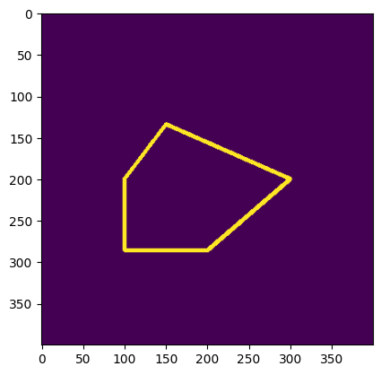
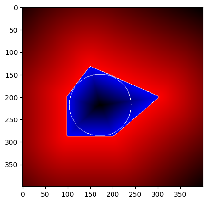
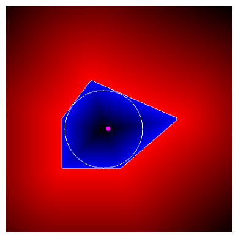

Distance à un contours
Dans un premier temps on cree un polygone quelconque que l'on dessine dans une image (peut déja utile pour créer des ROI ou hitbox) :
Polygone quelconque
Esnuite on utilise pointPolygonTest pour connaitre, soit la distance entre chaque pixel et un contour du polygone, soit si l'on est dans le polygone
De là grâce à minMaxLoc on peut déduire les minimums et maximums locaux et enfin les interpreter comme des gradient et utiliser ces information pour d'autres calculs.
Gradient de distanhce au polygone (avec plus grand cercle inscrit calculé à partir de minMaxLoc)
Algorithme calcul de distance à un contour en Python
import cv2 as cv
import numpy as np
import argparse
import random as rng
import matplotlib.pyplot as plt
# Create an image
r = 100
src = np.zeros((4*r, 4*r), dtype=np.uint8)
drawing = np.zeros((src.shape[0], src.shape[1], 3), dtype=np.uint8) # pour l'imager
# Create a sequence of points to make a contour
vert = [None]*6
vert[0] = (3*r//2, int(1.34*r))
vert[1] = (1*r, 2*r)
vert[2] = (2*r//2, int(2.866*r))
vert[3] = (4*r//2, int(2.866*r))
vert[4] = (3*r, 2*r)
vert[5] = (3*r//2, int(1.34*r))
# Draw it in src
for i in range(6):
cv.line(src, vert[i], vert[(i+1)%6], ( 255 ), 3)
# trace une ligne entre i et i+1 >> le modulo est une astuce pour fermé la forme pour avoir i à 0
# Get the contours
contours, _ = cv.findContours(src, cv.RETR_EXTERNAL, cv.CHAIN_APPROX_SIMPLE)
# EXTERNAL car sinon contours donne deux contours ext et interieur avec cv.line
raw_dist = np.empty(src.shape, dtype=np.float32)
# Calculate the distances to the contour
for i in range(src.shape[0]):
for j in range(src.shape[1]):
raw_dist[i,j] = cv.pointPolygonTest(contours[0], (j,i), True)
# contour 0 est la forme dessiné,
# retourne une matrice de la mm taille que src de la distance au contour
#(True à la fin) ou si on est dedans (False à la fin)
# distance positive à l'interieur, negative à l'exterieur et 0 sur le contour
minVal, maxVal, minDistPt, maxDistPt = cv.minMaxLoc(raw_dist)
minVal = abs(minVal)
maxVal = abs(maxVal)
#minVal → distance négative la plus éloignée (extérieur)
#maxVal → distance positive la plus éloignée (centre)
#maxDistPt → point le plus loin du contour à l’intérieur
#minDistPt → point le plus loin du contour à l’exterieur
for i in range(src.shape[0]): # pour les gradient
for j in range(src.shape[1]):
if raw_dist[i,j] < 0:
drawing[i,j,0] = 255 - abs(raw_dist[i,j]) * 255 / minVal
elif raw_dist[i,j] > 0:
drawing[i,j,2] = 255 - raw_dist[i,j] * 255 / maxVal
else:
drawing[i,j,0] = 255
drawing[i,j,1] = 255
drawing[i,j,2] = 255
cv.circle(drawing,maxDistPt, int(maxVal),(255,255,255), 1, cv.LINE_8, 0)
plt.imshow(src)
plt.show()
plt.imshow(drawing)
plt.show()
Moment d'une forme
En traitement d’images, les moments géométriques décrivent la répartition spatiale des intensités d’une image \(I(x,y)\).
Le moment d’ordre zéro \(m_{00} = \sum_x \sum_y I(x,y)\) correspond à l’aire (ou à la masse totale) de l’objet pour une image binaire, ou à la somme des intensités pour une image en niveaux de gris.
Les moments du premier ordre :
\(m_{10} = \sum_x \sum_y x\,I(x,y)\) et
\(m_{01} = \sum_x \sum_y y\,I(x,y)\) décrivent respectivement la distribution
horizontale et verticale de la masse ; ils sont utilisés pour calculer le centre de gravité
de la forme.
Les moments du second ordre apportent des informations sur la dispersion
et l’orientation de l’objet.
Le moment croisé
\(m_{11} = \sum_x \sum_y x\,y\,I(x,y)\) mesure la corrélation entre les axes
\(x\) et \(y\) et renseigne sur l’obliquité ou l’orientation diagonale de la forme.
Les moments
\(m_{20} = \sum_x \sum_y x^2\,I(x,y)\) et
\(m_{02} = \sum_x \sum_y y^2\,I(x,y)\) représentent quant à eux les variances
horizontale et verticale : ils indiquent à quel point la forme est étalée
le long des axes \(X\) et \(Y\).
Ensemble, ces moments constituent une description compacte de la taille, de la position et de l’orientation d’un objet dans l’image.
Calcul du centroïde (centre de masse)
Le centroïde d’un objet correspond à son centre de masse géométrique. Il est calculé à partir des moments géométriques du premier ordre.
Le centroïde \((x_c, y_c)\) est alors donné par :
\[ x_c = \frac{m_{10}}{m_{00}}, \qquad y_c = \frac{m_{01}}{m_{00}} \]
Intuitivement, \(m_{10}\) et \(m_{01}\) mesurent la répartition de la masse selon les axes horizontal et vertical, tandis que \(m_{00}\) représente la masse totale. Le centroïde correspond donc au point d’équilibre de la forme.
Calcul de l’orientation de la forme
L’orientation d’un objet est définie comme l’angle entre l’axe horizontal et l’axe principal de la forme, c’est-à-dire la direction selon laquelle l’objet est le plus étendu. Cette orientation est calculée à partir des moments centraux d’ordre 2.
En particulier :
\[ m_{20}, \quad m_{02} \quad \text{(variances horizontale et verticale)} \] \[ m_{11} \quad \text{(corrélation entre } x \text{ et } y\text{)} \]
L’angle d’orientation \(\theta\) de la forme est alors donné par :
\[ \theta = \frac{1}{2} \arctan\!\left( \frac{2\,m_{11}}{m_{20} - m_{02}} \right) \]
Cette formule provient de l’analyse des axes principaux d’inertie de la forme. Le terme \(m_{11}\) traduit l’inclinaison diagonale, tandis que la différence \(m_{20} - m_{02}\) compare les dispersions horizontale et verticale. Le facteur \(\frac{1}{2}\) est dû à la symétrie de l’ellipse équivalente à la forme.
L’angle \(\theta\) est exprimé en radians et peut être converti en degrés par :
\[ \theta_{\text{deg}} = \theta \times \frac{180}{\pi} \]
Ainsi, l’orientation correspond à la rotation nécessaire pour aligner la forme sur son axe principal, ce qui est particulièrement utile pour l’analyse de formes et la vision par ordinateur.
Centre de masse du polygone
Ici on trouve une orientation de ce polygone de -14°
Algorithme calcul centroide et orientation en Python
import cv2 as cv
import numpy as np
import argparse
import random as rng
import matplotlib.pyplot as plt
import math
# Create an image
r = 100
src = np.zeros((4*r, 4*r), dtype=np.uint8)
drawing = np.zeros((src.shape[0], src.shape[1], 3), dtype=np.uint8) # pour l'imager
# Create a sequence of points to make a contour
vert = [None]*6
vert[0] = (3*r//2, int(1.34*r))
vert[1] = (1*r, 2*r)
vert[2] = (2*r//2, int(2.866*r))
vert[3] = (4*r//2, int(2.866*r))
vert[4] = (3*r, 2*r)
vert[5] = (3*r//2, int(1.34*r))
# Draw it in src
for i in range(6):
cv.line(src, vert[i], vert[(i+1)%6], ( 255 ), 3)
# trace une ligne entre i et i+1 >> le modulo est une astuce pour fermé la forme pour avoir i à 0
# Get the contours
contours, _ = cv.findContours(src, cv.RETR_EXTERNAL, cv.CHAIN_APPROX_SIMPLE) #
EXTERNAL car sinon contours donne deux contours ext et interieur avec cv.line
# Calcul des moments
mu = [None]*len(contours)
for i in range(len(contours)):
# m00 : moment d’ordre 0 → aire
# m10, m01 : moments d’ordre 1 → centre de masse
# m20, m11, m02 : moments d’ordre 2 → dispersion et orientation
mu[i] = cv.moments(contours[i])
# Calcul des centres de masse
mc = [None]*len(contours)
for i in range(len(contours)):
# Calcul du centroïde (centre de masse)
# x_c = m10 / m00
# y_c = m01 / m00
# Le terme 1e-5 évite une division par zéro si l’aire est nulle
mc[i] = (mu[i]['m10'] / (mu[i]['m00'] + 1e-5),
mu[i]['m01'] / (mu[i]['m00'] + 1e-5))
# Dessine le centre de masse sur l’image (point violet)
cv.circle(drawing,
(int(mc[i][0]), int(mc[i][1])),
4,
[255, 0, 255],
-1)
# Comparaison des aires et calcul du périmètre
for i in range(len(contours)):
print(
' * Contour[%d] - Area (M_00) = %.2f - Area OpenCV: %.2f - Length: %.2f'
% (
i,
mu[i]['m00'], # Aire via le moment m00
cv.contourArea(contours[i]), # Aire via OpenCV
cv.arcLength(contours[i], True) # Périmètre du contour (True = fermé)
)
)
# Calcul de l’orientation principale de la forme
# Calcul de l’angle de l’axe principal de la forme
# L’angle correspond à la direction selon laquelle la forme est la plus étendue
# Formule issue des moments centraux d’ordre 2
angle = 0.5 * math.atan2(
2 * mu[0]['mu11'], # Corrélation X-Y
mu[0]['mu20'] - mu[0]['mu02'] # Différence des dispersions horizontale/verticale
)
# Conversion de l’angle de radians vers degrés
angle_degrees = math.degrees(angle)
# Affichage de l’orientation de la forme
print('Orientation = %d degrés' % angle_degrees)
plt.imshow(drawing)
plt.axis('off')
plt.show()